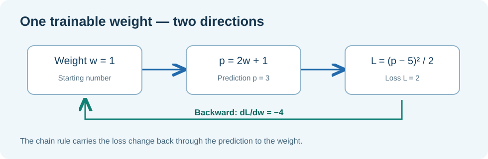

FOUNDATION MATHEMATICS · UNIT 17 OF 18
Backpropagation with one understandable example
Follow a prediction, calculate its error and see how a gradient travels backwards.
1. Why does a training system calculate gradients?
An AI training program adjusts numerical parameters called weights. The goal is usually to reduce a precisely defined error or loss. A gradient tells us how a small change to a weight would affect that loss. The word backward refers to calculating these effects from the final loss back through earlier operations.
We can understand the idea using one number. No knowledge of matrix calculus is needed.
2. A two-step calculation
Suppose the first operation in a tiny model takes a weight w and produces a prediction p:
We want the prediction to equal a target of 5. We measure error using half the squared difference:
With w=1, the prediction is p=2×1+1=3. The difference from the target is 3−5=−2. Square it: (−2)²=4. Divide by two: L=2.
3. Backward: find the effect of the weight
The prediction changes twice as fast as the weight because p=2w+1. The loss changes by the size of the prediction error, p−5. To connect these two effects, we multiply them.
Here dL/dp=p−5=3−5=−2, and dp/dw=2. Therefore dL/dw=(−2)×2=−4.
The negative sign tells us that a small increase in w is expected to decrease the loss near w=1. It is not a promise that any arbitrarily large change will help.
4. Check the direction with a real number
Increase w from 1 to 1.1. The new prediction is 2×1.1+1=3.2. The new loss is (3.2−5)²/2=(−1.8)²/2=3.24/2=1.62. The loss fell from 2 to 1.62.
| Weight | Prediction | Loss |
|---|---|---|
| 1.0 | 3.0 | 2.00 |
| 1.1 | 3.2 | 1.62 |
| 1.2 | 3.4 | 1.28 |
We now understand what the backward result means without memorising notation.
5. How it connects to rotary attention
Real attention has more steps: projected queries and keys, position-aware rotations, scores, softmax weights and a final loss. Each intermediate result depends on earlier results. Reverse-mode automatic differentiation uses the chain rule repeatedly to find the effect of every trainable parameter.

A real training tape is the Framework's record of those operations and their gradients. It is an engineering data structure, not a video or a literal strip of tape.
6. Inspect the Framework C23 boundary
/* Simplified excerpts of the established Umicom API: */
UmiStatus status = UmiAiTrainingBackward(tape, loss);
/* Once status == UMI_STATUS_OK, inspect the gradient
of a retained input tensor with a caller-owned buffer. */
status = UmiAiTrainingTensorGradients(query, gradient, count);
In the production tape, the Framework owns the gradient memory. Applications request an approved copy; they must not reach into the private tape representation.
7. Practice with worked answers
- With w=2, what prediction does p=2w+1 produce?
- At w=2, what is L=(p−5)²/2?
- What does a derivative of −4 suggest about making a small increase to the weight?
Reveal the worked answers
1. 2×2+1=5. 2. (5−5)²/2=0. 3. The local slope is negative, so increasing w slightly should initially decrease L. The conclusion is local; a large update can overshoot.
Use this in engineering: LLM Lesson 91 compares derivatives calculated by the Framework against an independent numerical estimate.